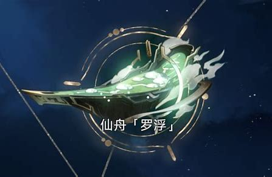
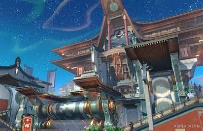
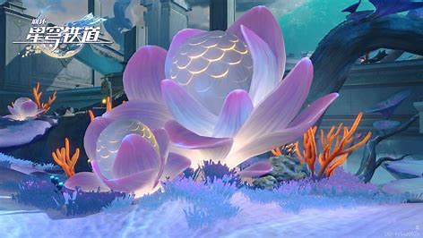
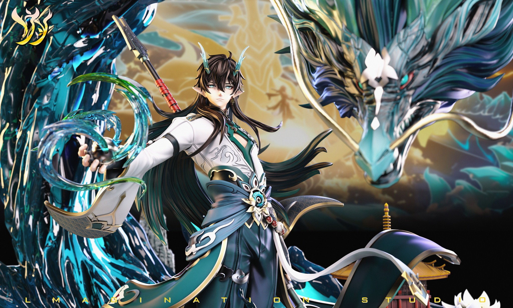

◈ 角色背景
仙舟文明：以「罗浮仙舟」为代表的星际舰队文明，融合东方仙侠与科幻元素，在星海中巡游数千年。
星神与命途：存在「星神」这类至高存在（如岚-巡猎星神），其力量衍生出「命途」体系，凡人可通过契合命途获得超凡能力。
持明族：龙裔种族，拥有轮回转生能力，但每次轮回会失去部分记忆，族群内部因「龙尊传承」问题存在权力斗争。
丰饶之祸：因追求长生引发的灾难，导致仙舟与「丰饶民」势力敌对，也是持明族衰落的根源之一。
星穹列车：跨星际旅行的中立组织，成员多为被命运裹挟的「无名客」，游走于各方势力间。
丹恒出身于仙舟联盟的一艘奇丽雄伟巨舰之上，其模样丹恒却很少见到。丹恒是持明族后裔，也是无名客。身为持明龙尊的转世之身，丹恒前世曾身负守望建木的职责，是众人仰止的英雄。丹恒是不朽星神“龙”的后裔。自诞生日起，他被视为持明的天之骄子，人们期许他带领族人脱离轮回的困境，踏上全新的道路。上一世的他既是骁勇绝伦的战士，也能以云吟治疗他人。作为受选之人，资质不可限量，不借机关便可御水。然而命运却走向了不同的道路，曾经的仙舟英雄，自此沦为罪人。
而如今，丹恒受尽褪鳞之刑，被古海之水涤尽了罪愆的丹恒。当年那位持明龙尊，已经不在了.




◈ 身份设定
丹恒是清冷寡言的少年，持有名为“击云”的长枪，于列车漫长的开拓之旅中担任护卫。
丹恒对自己的过往始终讳莫如深，他与列车同行正是为了摆脱自己曾亲手造就的一切。然而，列车真的会带着他远离“过去”么。
前生种种，对丹恒来说就像陌生的影子，看不真切，却亦步亦趋。
丹恒很难描述那种感觉，但可以肯定的是，他不是任何人的影子。丹恒热爱看书，但那只是过去的习惯。丹恒也不爱聊天，若不是
查阅智库，就不要随意进入资料室，因为资料室的功能不包含聊天。
身份标签：
星穹列车成员
罗浮仙舟 · 持明族 · 龙尊
旧五骁之一 称号"饮月君"
性格特征：
沉静如水、寡言而坚毅，待人有礼却疏离。
内心隐藏着深重的罪责与决断，为不愿牵连
他人，宁愿独自背负过往。
语录摘录：
"若宿命无法挣脱，便让我一枪将其斩断。"
"持明族的恩怨，终需由我一人了结。"
◈ 技能展示
⚔️ 角色技能介绍 · 丹恒·饮月
丹恒·饮月是虚数属性、毁灭命途的主C角色，战斗方式独特，以战技点强化普通攻击为核心机制。
🔹强化普攻：「瞬华」「天矢阴」「盘拏耀跃」对单体敌人造成虚数伤害。此攻击可以通过消耗战技点强化，根据强化次数不同，普攻「泽芝」将分别变为「瞬华」「天矢阴」「盘拏耀跃」普攻的攻击段数和伤害会随着强化次数增加，其中「天矢阴」和「盘拏耀跃」还将从单体伤害变为扩散伤害；
◈ 装备推荐
"乘黄之跃，腾渊之啸，皆寄于一枪之间。"
——《罗浮天典·饮月篇》
躯干：暴击率/暴击伤害
脚部：攻击力百分比
位面球：虚数伤害提高/攻击力百分比
连结绳：攻击力百分比/能量恢复效率
副属性：暴击率>暴击伤害>攻击力百分比>攻击力
◈ 配队推荐
💠 花停藿多柺一
| 位置 | 角色 | 职责说明 |
| 主C | 丹恒·饮月 | 毁灭命途，主力输出，依赖强化普攻爆发伤害 |
| 辅助 | 花火 | 拉条并提供战技点 |
| 辅助 | 停云 | 多普攻，为饮月快速充能终结技 |
| 生存 | 藿藿 | 治疗，普攻产点，大招充能 |
✅ 特点：经典的虚数大C三保一体系，输出稳定，适合各种战斗场景。
🌀 拉条输出
| 位置 | 角色 | 职责说明 |
| 主C | 丹恒·饮月 | 主力输出，速度略高星期日 |
| 辅助 | 星期日 | 拉条饮月，充能加点 |
| 辅助 | 知更鸟 | 增伤拉条 |
| 生存 | 藿藿 | 充能+攻击力加成，节省战技点 |
✅ 特点：适合高层模拟宇宙/侵蚀战，容错率高。
🌌 新辅助尝鲜
| 位置 | 角色 | 职责说明 |
| 主C | 丹恒·饮月 | 极限主C，强化普攻打出爆炸伤害 |
| 辅助 | 缇宝 | 追击伤害提升清场效率，带舞舞舞光锥多动 |
| 辅助 | 星期日 | 充能加点拉条一条龙服务 |
| 生存 | 藿藿 | 治疗，平a加点，保障饮月输出 |
✅ 特点：快节奏暴力队，适合小怪聚集场景和高层模拟宇宙